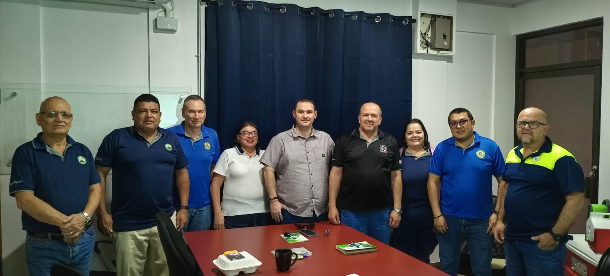

SITRAMUSCA fue constituido oficialmente el 26 de octubre de 1979 y registrado legalmente el 28 de septiembre del mismo año, con el objetivo de representar a los empleados de la Municipalidad de San Carlos. Su creación respondió a la necesidad de los trabajadores de organizarse para proteger sus derechos laborales Desde sus inicios, el sindicato ha buscado consolidarse como un espacio de apoyo, negociación y defensa de los intereses de los trabajadore